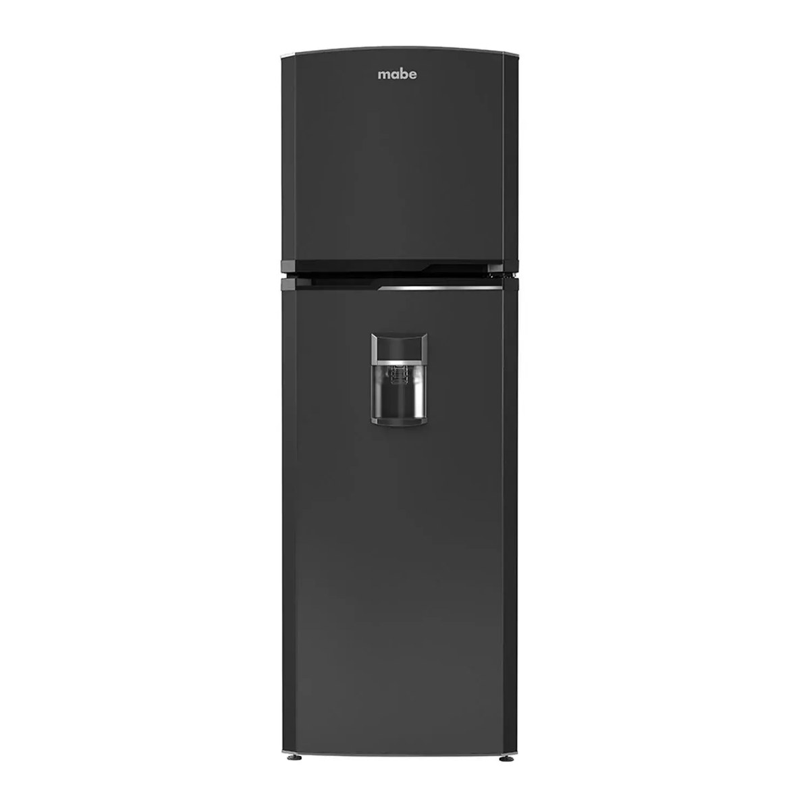
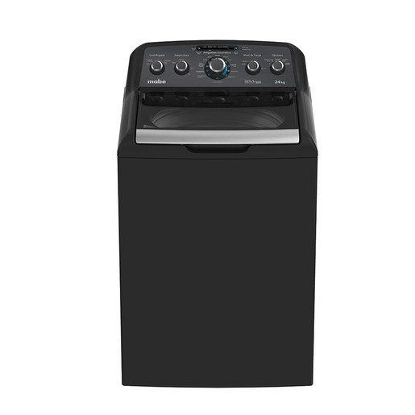
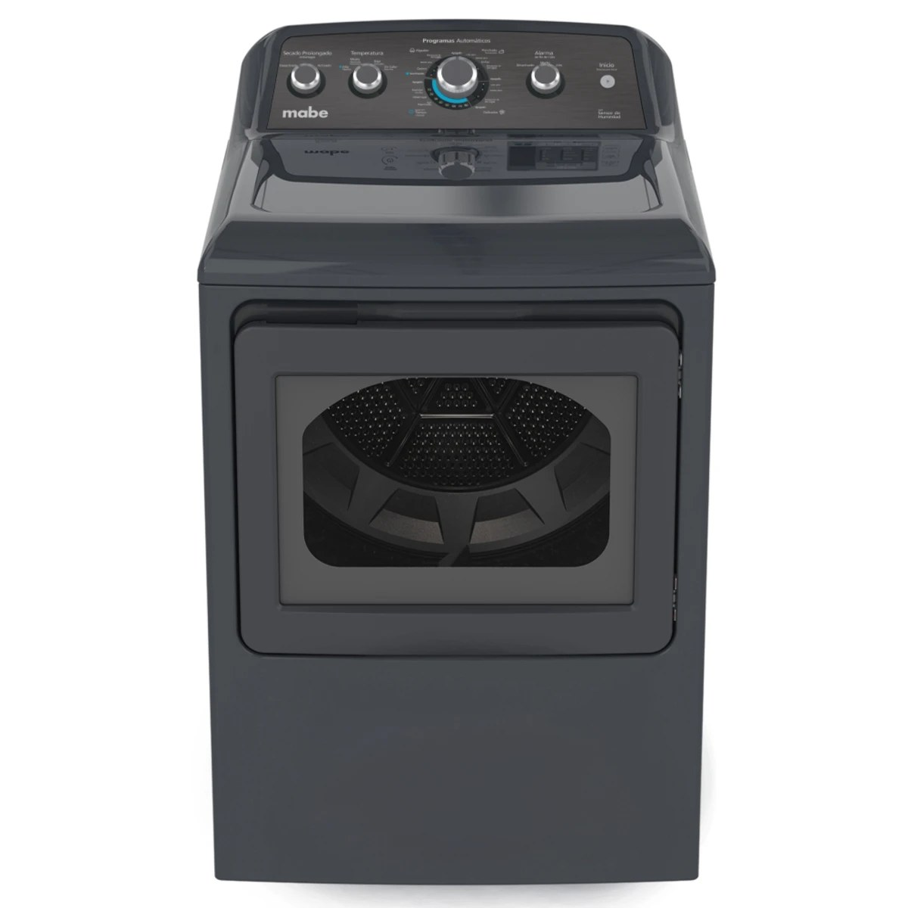
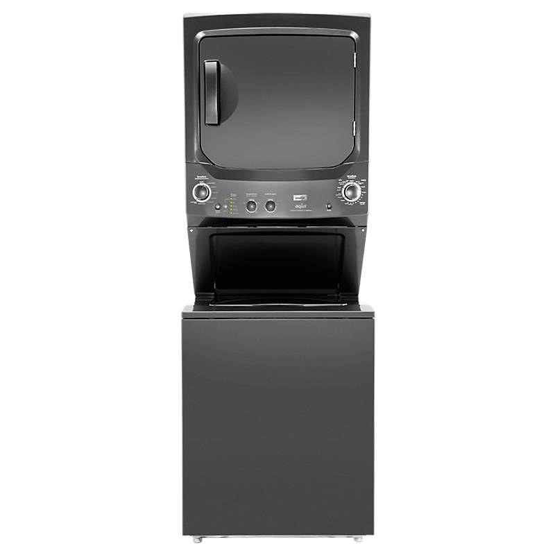
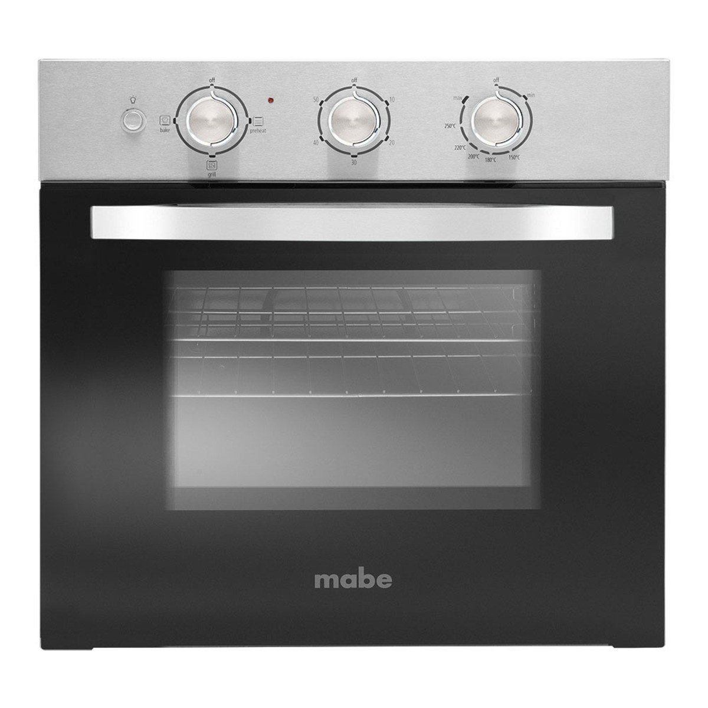

La altura y el clima fresco de Quito son de los más favorables para la vida útil de los electrodomésticos en la región, con menos exigencia sobre compresores que en zonas costeras. La forma alargada de la ciudad hace que los tiempos de traslado varíen bastante según el sector, desde el norte financiero hasta los valles orientales.
Tiempo estimado de respuesta: Visitas coordinadas en 24 a 48 horas en toda la ciudad y valles cercanos.
Escribir por WhatsApp
Diagnóstico y reparación de refrigeradoras Mabe: No Frost, Frost Free, French Door y side by side, con revisión del sistema de enfriamiento, sellado y consumo eléctrico.
Ver servicio
Reparación de lavadoras Mabe automáticas de carga superior e inferior: fugas, vibración excesiva, fallas de centrifugado y tarjetas de control.
Ver servicio
Servicio técnico para secadoras Mabe de ropa: fallas de calentamiento, tambor que no gira, tiempos de secado excesivos y limpieza de ductos de ventilación.
Ver servicio
Reparación de torres Mabe / centros de lavado (lavadora y secadora en un solo cuerpo): el electrodoméstico que más se daña y el más buscado para reparar en Ecuador, con diagnóstico independiente de cada función.
Ver servicio
Reparación de cocinas Mabe a gas y eléctricas: quemadores que no encienden, horno que no calienta parejo, fugas de gas y paneles de control, con revisión de seguridad incluida en cada visita.
Ver servicio
Reparación de hornos Mabe empotrados e independientes: fallas de calentamiento, encendido, iluminación interior y sellado de puerta, con diagnóstico específico para modelos eléctricos y a gas.
Ver servicioEscríbenos por WhatsApp o llama directamente. Respondemos de lunes a sábado, de 7:00am a 6:00pm.